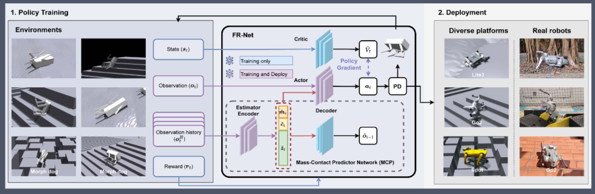
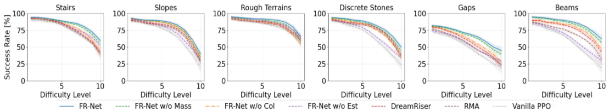
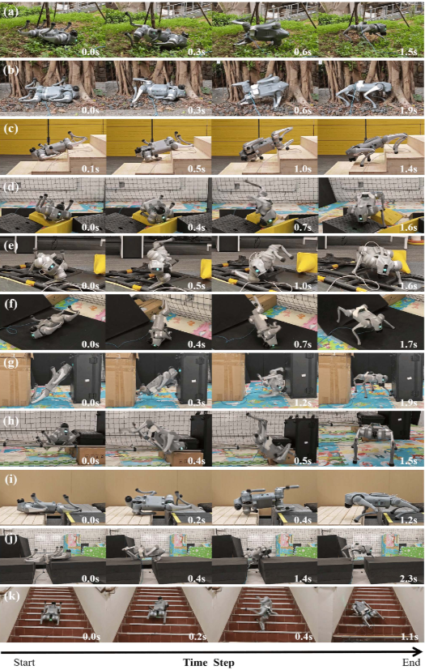
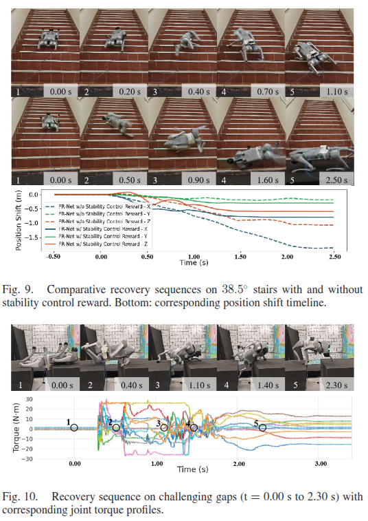
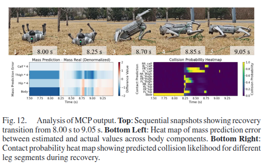

Learning based framework that enables quadruped robots to recover from arbitrary fall poses across diverse environments
1 1. 배경 및 문제 정의
복잡한 지형은 로봇의 균형·안정성을 쉽게 무너뜨리며, 낙상 후 스스로 안정적으로 회복하는 것은 어려운 과제입니다. 기존 연구는 제한된 센서로 인해 지형 특성(질감, 경사, 장애물 형태) 을 충분히 인지하지 못하고, 로봇–지형 간 비선형·불확실 접촉 상호작용을 정확히 다루지 못합니다.
1.1 1.1 Model-based 접근의 한계
- 단순화된 모델 및 미리 정의한 contact point에 의존하여 비정형·동적 접촉 시나리오에 취약.
- 이로 인해 낙상 상태에서의 회복 능력에 제약이 발생.
1.2 1.2 Learning-based 접근의 한계
- DRL은 평탄·완만 지형에서는 성과가 있으나, 고도로 불규칙한 지형에서는 여전히 효과적 회복 전략 학습이 어려움.
- 때때로 위험한 구르기(dangerous rolling motions) 와 같은 불안정 회복 동작이 나타남.
1.3 1.3 본 논문의 목표
- 범용 회복성: 어느 낙상 자세·환경에서도 회복 가능한 일반화된 회복 능력 확보.
- 제한 센서로 정확 추정: 제한된 센서만으로 질량 분포와 접촉 상태를 추정하여, 불완전 인지·불확실 상호작용 문제를 완화. 이를 담당하는 핵심 모듈이 Mass–Contact Predictor (MCP) 입니다.
2 2. Mass–Contact Predictor (MCP)

MCP는 VAE 기반으로, 순수 proprioception 시퀀스만으로 다음을 추정합니다.
- \(m_{t}\) (질량 분포): base, hip, thigh, calf 등 주요 세그먼트의 상대적 질량(=무게중심 기여)을 추정 → 전체 무게중심(CoM) 예측에 기여.
- \(c_{t}\) (충돌 확률): 발뿐 아니라 몸체 각 부위의 환경 접촉 확률을 예측(이진이 아니라 확률로 표현하여 불확실성 반영).
- \(z_{t}\) (컨텍스트): 로봇 동역학·환경을 압축한 잠재 벡터로, 시간적 특징을 포착.
디코더는 \(m_{t}\), \(c_{t}\), \(z_{t}\) 로 다음 시점 관측 \(o_{t+1}\)을 예측하여, self-supervised 방식으로 의미 있는 표현을 학습시킵니다.
2.0.1 2.1 학습 손실
- 질량 추정 손실: 예측 질량 분포 vs. 실제 질량의 MSE 최소화.
- 충돌 추정 손실: 예측 충돌 확률 vs. 실제 접촉 정보의 BCE 최소화.
- VAE 손실: 재구성 손실 + KL 발산(표준 VAE 구성).
특징: FR-Net의 MCP는 질량 분포 추정과 접촉 추정을 단일 네트워크로 통합하여, 내부 물리 특성과 외부 접촉 상호작용을 동시에 파악합니다. 발 외에도 몸통 접촉 확률까지 추정해, 발 지지 상실 시 몸통을 활용한 안전한 회복 전략까지 가능하게 합니다.
3 3. FR-Net과 정책 학습
- MCP의 예측 \(m_{t}\), \(c_{t}\), \(z_{t}\) 는 actor의 보강 상태 \(p_{t}\) 의 일부로 주입되어 제어 입력에 직접 영향.
- 목적: 불안정한 회복 동작을 억제하고, 다양한 낙상 자세·지형에서 안전·견고한 회복을 달성하는 정책 학습.
4 4. 실험 구성 및 결과
4.1 4.1 Ablation 설정
- FR-Net w/o mass
- FR-Net w/o col
- FR-Net w/o Est (MCP 전체 제거)
- DreamRiser (latent 및 \(v_{t}\)만 활용)
- Vanilla PPO

4.2 4.2 시뮬레이션 결과(요약)
- Level 1–3: 모든 방법이 90%+ 성공률.
- 최대 난이도 Level 10: FR-Net 69.5%로, Vanilla PPO 대비 +21.8%p 향상.
- 기타 환경의 Level 10에서도 FR-Net이 일관되게 상대 우위.
4.3 4.3 실제 환경 시연



- 가파른 계단: 안정성 보상(무릎 등 관절이 지형과 접촉 시 발생하는 수평력 패널티)을 적용한 FR-Net은 구르기 없이 안전 회복. 보상 미적용 시 구르기 발생.
- 틈새: 두 다리가 틈새에 빠지는 상황에서도 지지면을 재구성하며 회복.
- 빔(폭 좁은 지지면): 3발 접촉만으로도 회복 성공.
- MCP 출력 분석: 실제 동적 움직임에서 질량 추정 정확도 향상, 외부 센서 없이도 부위별 접촉 확률을 성공적으로 예측.
5 5. 결론
FR-Net은 복잡·불규칙 지형에서의 낙상 회복을 정량·정성적으로 입증했습니다.
MCP가 제공하는 질량 분포와 접촉 상태는 강화학습 정책의 핵심 보강 정보로 작용하며, ablation으로 그 중요성이 확인되었습니다. 또한 안정성 보상은 기존 방법의 문제였던 구르기 동작을 억제하여 안전한 회복을 가능하게 함을 시뮬레이션과 실제 실험에서 모두 검증했습니다.